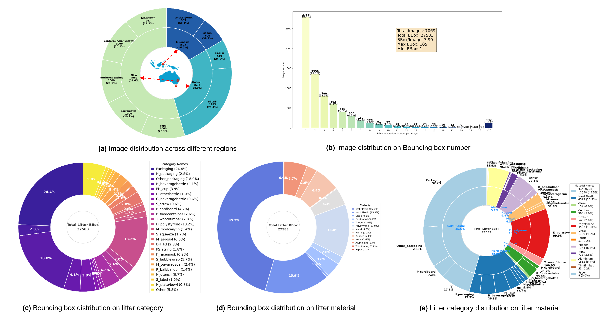

Our aquatic litter dataset consists of a total of 7,906 images collected from three distinct geographical regions, covering 25 litter categories and 11 different litter materials. All images are manually annotated, resulting in 27,583 bounding boxes in total. Figures present detailed statistical analyses of the dataset: (a) the distribution of images across different regions; (b) the histogram of the number of bounding boxes per image; (c) the distribution of bounding boxes across different litter categories; (d) the distribution of bounding boxes among different litter materials; and (e) the distribution of images for each litter category under different litter materials.
Abstract
Plastic pollution in oceans poses substantial threats to human health, economic development, and marine biodiversity, with rivers serving as the principal transport pathway for inland waste. While camera-based AI monitoring offers a scalable alternative to labor-intensive manual surveys, existing computer vision datasets fail to capture the complex visual conditions of real-world riverine environments leaving floating waste detection critically underexplored. To rectify this, we introduce FloatWaste, the first comprehensive, multi-region dataset for floating riverine waste detection, comprising 27,583 expert-annotated bounding boxes across 25 fine-grained waste categories spanning 11 material types, collected from diverse aquatic settings worldwide. Each annotation was validated through cross-verification by environmental scientists and local domain experts to ensure label accuracy. Extensive evaluation of representative vision models reveals critical challenges: detecting small and partially submerged objects under glare and clutter, maintaining robust performance under cross-domain distribution shifts, handling severe occlusion and other complexities. Beyond advancing computer vision research, FloatWaste directly enables real-world applications including automated upstream waste interception systems and waterway cleanliness monitoring, facilitating effective waste management before debris reaches the ocean.
Cameras installation

The map of the camera's placement distribution for Phase 1 monitoring activity, illustrating the river's length from block A to block B, which is approximately 6.3 km. This visual representation helps to understand the extensive coverage of the monitoring system along the river, ensuring that each section is adequately observed and managed.Block A is situated in the eastern part of Bandung, specifically around the Citarik River. Six cameras were installed, positioned at the lower reaches of the Cikijing River (Cam-1), the Cimande River (Cam-2), the Citarik River(Cam 3), and at the confluence of the Cimande and Cikijing (Cam-4), and lastly the confluence of Citarik, Cimande, Cikijing Rivers (Cam-Opt & Cam-5). Block B covers the Citarik, the main Citarum River, and the Cikeruh River. Four cameras were installed in Sapan, located in the central basin of Bandung, specifically at the lower reaches of the Citarik (Cam-6 & Cam-7), the main Citarum (Cam-8), and the Cikeruh (Cam-9).
Detection
Challenge 1 : Small Objects

A major challenge in floating litter detection lies in the prevalence of extremely small objects. Many debris instances occupy only a tiny fraction of the image, often suffering from low resolution, motion blur, and background clutter caused by water reflections and waves. Such small-scale targets provide very limited visual cues, making them difficult to distinguish even for state-of-the-art large vision-language models. In practice, we observe that powerful models such as InternVL2.5-13B still struggle to reliably perceive and localize these small litter instances, frequently missing them or confusing them with background noise. This highlights the fundamental difficulty of small-object perception in real-world marine environments.
Challenge 2 : Dense Object

Beyond small objects, highly dense litter distributions pose another critical challenge for garbage detection. In real-world water surfaces, a large number of debris instances often appear in close proximity, leading to severe occlusion, overlapping boundaries, and indistinguishable visual cues. Such dense scenes substantially degrade detection performance. Our empirical observations show that even strong detectors and vision–language models, including DINO, InternVL2.5, and Qwen2.5VL-72B, struggle to handle these scenarios effectively, suffering from frequent false positives and missed detections under high-density conditions.
Challenge 3 : Specular Reflection

In aquatic environments, strong surface reflections introduce severe visual interference for garbage detection. Specular highlights and mirror-like reflections distort object appearance, obscure true boundaries, and confuse spatial cues, making it difficult for models to accurately localize debris. More critically, reflections of surrounding objects are often mistakenly recognized as litter, leading to false detections. This reflection-induced ambiguity significantly degrades detection robustness and poses a major challenge for reliable real-world deployment.
Challenge 4 : Blurred Objects

Blurred garbage objects pose a significant challenge to reliable detection. Due to motion blur, defocus, or low image quality, garbage instances often lack clear visual cues, which can easily mislead detection models into classifying them as background or failing to perceive their presence altogether. This ambiguity substantially increases the risk of missed detections and false predictions, thereby degrading the robustness of garbage detection systems.
Challenge 5 : Background Interference

Background clutter and visual similarity between garbage and its surrounding environment pose significant challenges to accurate detection. In particular, when garbage objects share similar color, texture, or appearance with the background (e.g., garbage floating on water surfaces), detection models are easily confused and tend to misclassify garbage as background. Even powerful foundation models such as DINO and Florence struggle to reliably distinguish garbage targets under such high background–object similarity, leading to increased false negatives and degraded detection performance.
Challenge 6 : Geographical Diversity

Geographical diversity introduces substantial variability in garbage detection. Our dataset spans three distinct regions—Hobart, New South Wales, and Indonesia—where garbage types, appearance, and spatial distributions differ significantly. Such cross-region heterogeneity poses higher demands on model robustness and generalization, as detection models must adapt to diverse environmental conditions and unseen regional characteristics.